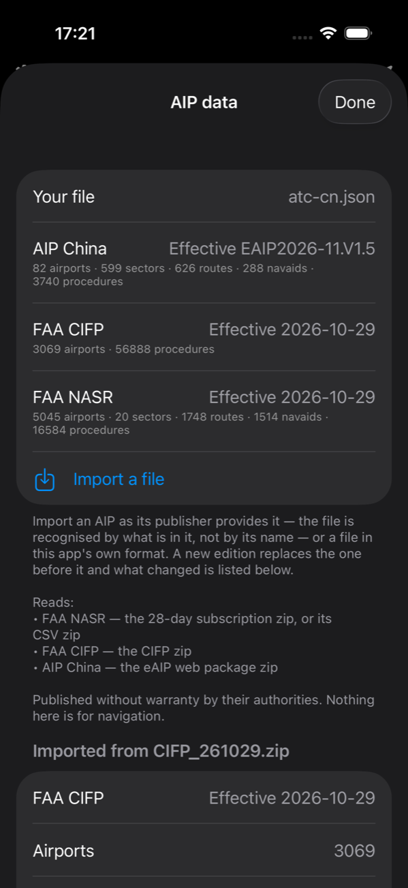

直接导入各国 AIP
除了自己准备 JSON 文件，App 还能直接读取民航部门发布的原始压缩包：你下载下来是什么样，就原样交给它，不用解压，也不用在电脑上转换。这一页说明目前支持哪些文件、去哪里下载、在 App 里怎么导入。

不可用于导航。这些数据只是接收机屏幕上的背景图。各出版物由其发布机构提供，不附带任何保证，并且每 28 天更新一次；任何飞行用途请使用官方发布的现行资料。
目前支持的文件
| 出版物 | 交给 App 的文件 | 大小 | 得到什么 |
|---|---|---|---|
| 美国 FAA NASR | 28DaySubscription_Effective_日期.zip，或其中的 CSV 压缩包 | 约 260 MB（CSV 包约 22 MB） | 机场和频率、导航台、航路、各管制中心的边界和遥控台站频率 |
| 美国 FAA CIFP | CIFP_日期.zip | 约 9 MB | 离场、进场、进近和复飞程序，带高度和速度限制 |
| 中国 AIP（eAIP） | EAIP版本_Web.zip | 约 1.9 GB | 机场和频率、管制扇区（边界、高度、频率、呼号）、航路、导航台、进离场和进近程序 |
靠内容识别，不看文件名。下载后改过名字也没关系：App 打开压缩包，看里面有什么来判断它是哪一种。认不出来的文件会直接告诉你，不会改动已有的数据。
日本和韩国的 AIP 正在做，做好后会出现在 App 里 AIP data 页底部的“Reads”清单里，那份清单始终是当前版本实际支持的全部。
去哪里下载
美国：FAA NASR 和 CIFP
美国联邦航空局（FAA）的航行数据是公开的，不需要注册。两份数据各管一部分，可以只导入其中一份，也可以都导入。
- NASR打开 FAA 的 28 Day NASR Subscription 页面，选当前生效的那一期（Current），在页面上下载完整的订阅压缩包
28DaySubscription_Effective_日期.zip。如果想省流量，同一页的 CSV 一节里有单独的 CSV 压缩包，App 同样认得。 - CIFP打开 FAA 的 CIFP 下载页面，下载当前这一期的
CIFP_日期.zip。
只导入 NASR 时，进离场程序只有定位点的先后顺序，没有高度和速度限制，也没有进近程序；再导入 CIFP 后，程序会换成带限制的完整版本。
中国：eAIP
中国民航的电子版 AIP 需要注册后自行下载：到 https://www.eaipchina.cn/e-AIP 注册账号，登录后下载网页版的完整压缩包（文件名形如 EAIP2026-11.V1.5_Web.zip）。
中国 AIP 的版权归中国民用航空局所有，可以免费查阅，但不能再分发。所以 App 不附带它，本手册也不提供下载：由你用自己的账号下载，App 在你的设备上读取，数据不会离开这台设备。
在 App 里导入
- 把压缩包放到 iPhone 或 iPad 上用隔空投送、iCloud 云盘，或者连上电脑后通过“文件”App，放到任何“文件”App 能看到的位置。不用解压。
- 打开 AIP data 页在 ATC 页或 ADS-B 页点右上角的齿轮进入设置，点 AIP data 这一行。
- 点 Import a file，选中压缩包选好之后导入就开始了。

导入过程中

导入时页面上会转圈，并显示正在做的步骤，比如 Airports 12/82（第 12 个机场，共 82 个）、Waypoints 37/78（正在读第 37 个机场的航路点表）、Procedures 30/78 · ZSPD（正在读浦东的程序）。大致用时：
| 文件 | 大致用时 | 为什么 |
|---|---|---|
| FAA NASR | 几秒到十几秒 | 只读其中十几张表 |
| FAA CIFP | 十几秒 | 约 40 万行记录 |
| 中国 eAIP | 一到几分钟 | 程序的编码表在 700 多份 PDF 里，要逐份读 |
请保持 App 开着，直到导入完成。切到别的 App 或回到桌面后，系统只再给它半分钟左右；超过之后导入会暂停，回到 App 时接着做。不管怎样，旧的数据在新的一版完整建好之前都不会被动到：中途被系统结束，损失的只是这一次导入。
压缩包不会被解压到设备上：App 直接从里面读它需要的那部分。唯一的例外是 NASR 完整包里嵌着的 CSV 小压缩包，会临时取出来，导入结束时删掉。
导入完成后


- 第一次导入：列出各类数据的数量，以及有哪些内容没能读出来和原因。
- 导入新的一期：新的一期整体替换旧的一期，然后逐条比较，列出每一类新增（+）、删除（−）、改动（~）了多少，点开可以看具体是哪些。两期完全一样时会直接告诉你没有变化。
- 删除下载的压缩包：读完之后压缩包就用不着了。结果下面有一个 Delete … 按钮可以把它删掉，App 不会不问就删你自己文件夹里的东西。
- 不想要某份出版物了：在列表里把那一行向左滑，点 Remove。
导入的数据用在哪
- ATC 页：按你的位置列出机场的各个频率，以及覆盖这里的管制扇区的频率。
- ADS-B 页：地图和雷达上的航路、导航台、机场、管制扇区和进离场程序。
一个国家的数据很大，App 不会一次全部读进来，而是看到哪里读到哪里：地图移到哪个区域，就读那个区域的数据。地图拉得很远时只画管制区边界和航路，拉近后才出现机场和程序。
你自己的 JSON 文件和导入的出版物可以同时使用；同一个机场或扇区两边都有时，以你自己的文件为准。
其他国家：用 JSON 文件
上面那张表以外的国家，App 目前不能直接读它们的 AIP。这不妨碍使用：App 另外规定了一种公开的 JSON 文件格式，任何国家的数据只要整理成这个格式就能导入，和直接导入的出版物同样显示在 ATC 页和 ADS-B 页上。
- 可以只做一部分。文件里的五类内容（机场和频率、导航台、航路、程序、扇区）哪一类都可以留空。只写几个机场的频率就能在 ATC 页用起来，一个机场十几行。
- 数据从哪来：各国的 AIP 一般都能在其民航部门的网站上免费查阅，机场频率在每个机场的 AD 2.18 一节，航路在 ENR 3，导航台在 ENR 4。是否允许再分发因国家而异，自己用通常没有问题，分享给别人之前请先看该国的使用条款。
- 怎么做：航图数据文件一页逐节说明了格式，并附有一份可以直接下载的洛杉矶示例，照着改最快。坐标既可以写十进制度，也可以照航图上的写法写成度分秒。
- 写错了会告诉你：导入时 App 会逐条指出读不懂的地方，一处写错只损失那一处，不会整份文件作废。
JSON 文件和直接导入的出版物可以同时存在。比如直接导入中国的 eAIP，再用一份自己整理的 JSON 补上香港。
各出版物目前读不到的内容
| 出版物 | 没有的内容 | 原因 |
|---|---|---|
| FAA NASR / CIFP | 管制中心以下的扇区边界 | 美国不公布这一层的边界。中心的频率按遥控台站给出，ATC 页列出离你 150 公里以内的台站。 |
| FAA NASR | B、C、D 类空域的形状 | 在另一种格式的文件里，还没有读。 |
| FAA NASR | 私人起降场和直升机场 | 只收有 ICAO 代码或对公众开放的机场，约 5000 个。 |
| 中国 eAIP | 香港、澳门、台湾 | 各有自己的 AIP，不在这份出版物里。 |